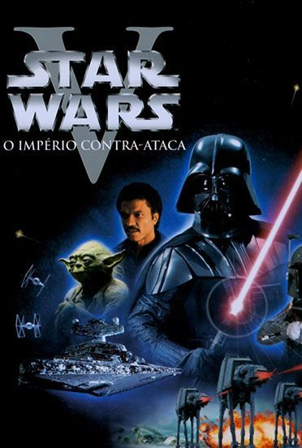
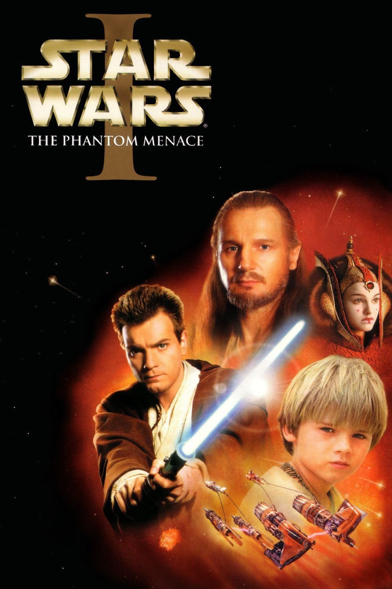

Abaixo estão listados todos os filmes da saga Star Wars em ordem de lançamento, no começo pode parecer estranho a ordem dos filmes, a rumores que George Lucas(criador) queria prodruzir uma saga com três trilogias, posteriormente, as negociações com a FOX(produtora inicial dos filmes) fez com escolhesse apenas uma delas e escolheu a parte central, devido ao cenário cinematrográfico da época que não aceitava bem filmes com sagas muito longas.
| Star Wars IV: A new hope (25 de Maio de 1977) |
|---|
 |
| Star Wars V: The Empires Strikes Back (21 de Maio de 1980) |
|  |
| Star Wars VI: Return of Jedi |
 |
| Star Wars I: The Phatom Menace (19 de Maio de 1999) |
|  |
| Star Wars II: Attack of the Clones (16 de Maio de 2002) |
| Star Wars III: Revenge of the Sith (19 de Maio de 2005) |
| Star Wars VII: The Force Awakens (18 de Dezembro de 2015) |
| Rogue One: A Star Wars Story (16 de Dezembro de 2016) |
| Star Wars VIII: The Last Jedi (14 de Dezembro de 2017) |
 |
| Solo: A Star Wars Story (25 de Maio de 2018) |
 |
| Star Wars IX: The Rise of Skywalker (19 de Dezembro de 2019) |